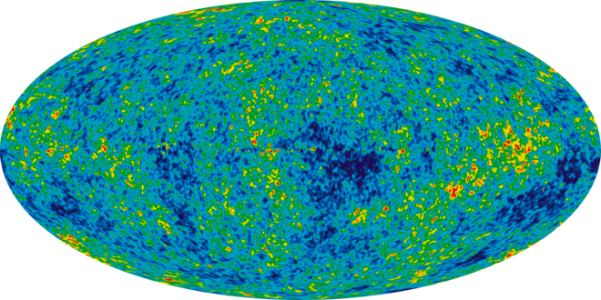

Cosmic Microwave Background
Source: wikipedia
The cosmic microwave background (CMB, CMBR) is microwave radiation that fills all space in the observable universe. It is a remnant that provides an important source of data on the primordial universe. With a standard optical telescope, the background space between stars and galaxies is almost completely dark. However, a sufficiently sensitive radio telescope detects a faint background glow that is almost uniform and is not associated with any star, galaxy, or other object. This glow is strongest in the microwave region of the radio spectrum. The accidental discovery of the CMB in 1965 by American radio astronomers Arno Penzias and Robert Wilson was the culmination of work initiated in the 1940s.

9-year Wilkinson Microwave Anisotropy Probe heat map of temperature fluctuations in the cosmic microwave background.
CMB is landmark evidence of the Big Bang theory for the origin of the universe. In the Big Bang cosmological models, during the earliest periods, the universe was filled with an opaque fog of dense, hot plasma of sub-atomic particles. As the universe expanded, this plasma cooled to the point where protons and electrons combined to form neutral atoms of mostly hydrogen. Unlike the plasma, these atoms could not scatter thermal radiation by Thomson scattering, and so the universe became transparent.[4] Known as the recombination epoch, this decoupling event released photons to travel freely through space – sometimes referred to as relic radiation.[1] However, the photons have grown less energetic, since the expansion of space causes their wavelength to increase. The surface of last scattering refers to a shell at the right distance in space so photons are now received that were originally emitted at the time of decoupling.
The CMB is not completely smooth and uniform, showing a faint anisotropy that can be mapped by sensitive detectors. Ground and space-based experiments such as COBE and WMAP have been used to measure these temperature inhomogeneties. The anisotropy structure is determined by various interactions of matter and photons up to the point of decoupling, which results in a characteristic lumpy pattern that varies with angular scale. The distribution of the anisotropy across the sky has frequency components that can be represented by a power spectrum displaying a sequence of peaks and valleys. The peak values of this spectrum hold important information about the physical properties of the early universe: the first peak determines the overall curvature of the universe, while the second and third peak detail the density of normal matter and so-called dark matter, respectively. Extracting fine details from the CMB data can be challenging, since the emission has undergone modification by foreground features such as galaxy clusters.
Learn more